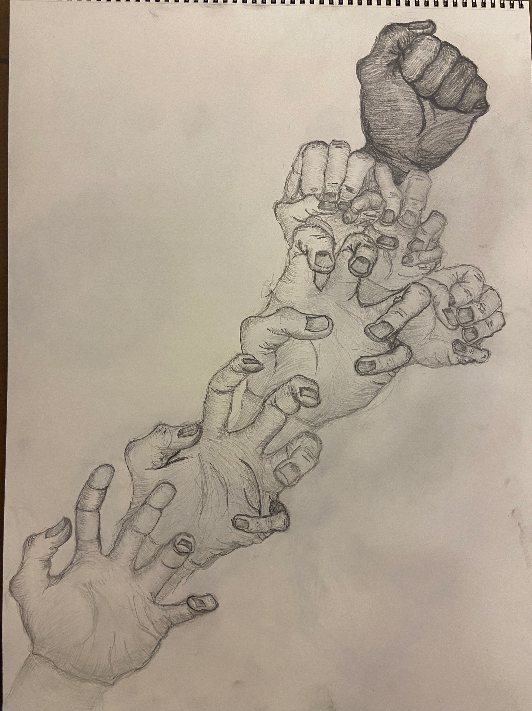
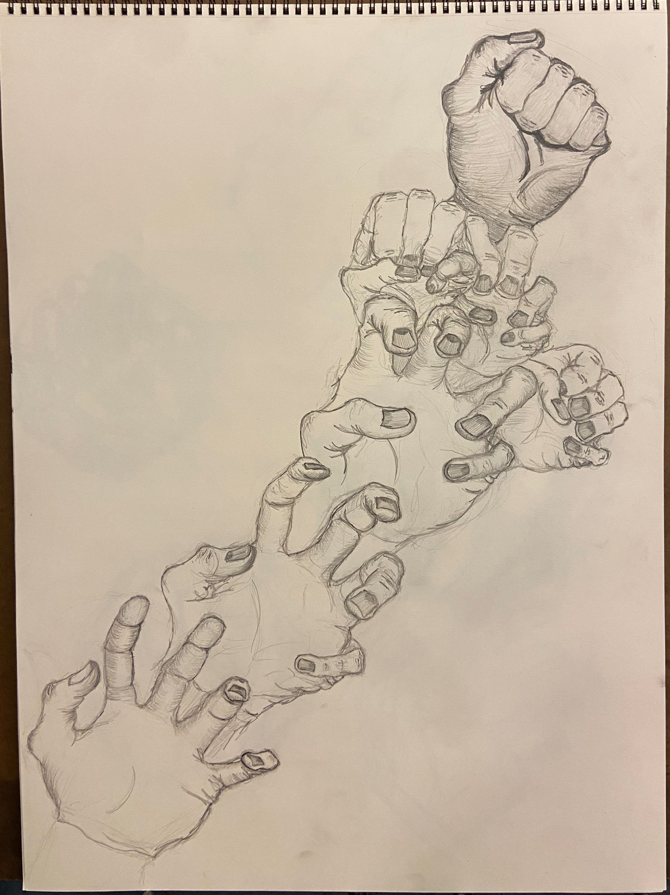
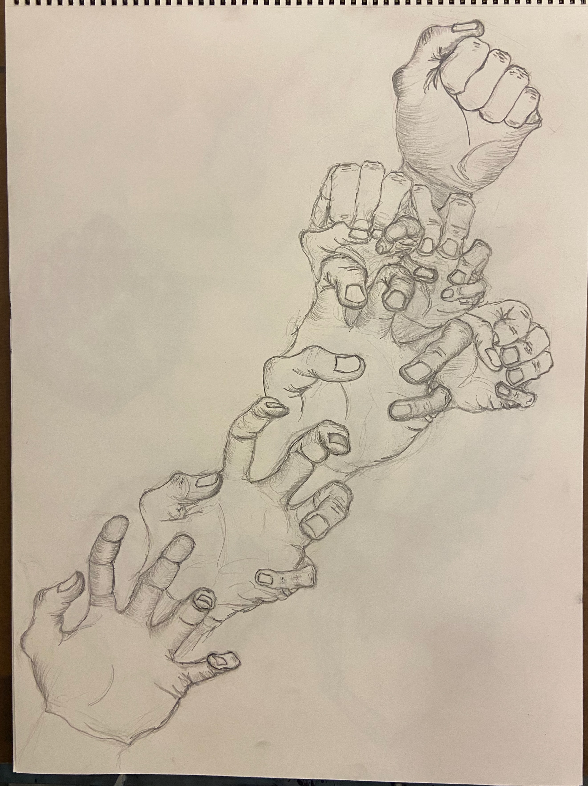
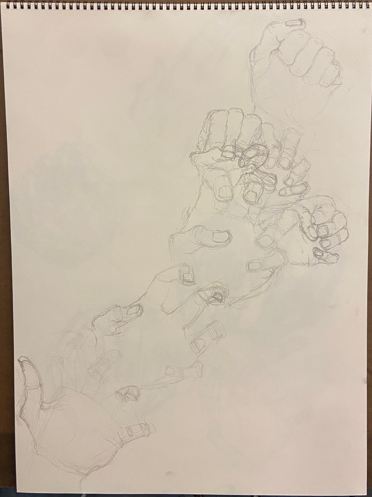

Large-form study of hands in different positions from the fall semester of my junior year of college.
This drawing depicts the physical process elicited from Misophonia that I have experienced, especially when I was younger, where I feel the stress down in my hands and quickly contract my fingers into a fist.



